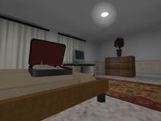

Hostile Intent
The Maps
This page shows you all the objectives for every official HI map. It's up to you to find them, but once you do you'll now be able to recognize them. Press the Use key when you get close to these objectives to use them.
hi_alandalus
(NATO) Hack the computer and search the weapons storage.
hi_aurora
(NATO) Search the documents and disable the missile dispersal system.
hi_basque
(NATO) Defuse the bomb (in the closet), check the weapons cache (in the couch), examine the maps (in the pool table). Only 2 out of 3 of the objectives must be completed.
hi_colombia
(NATO) Obtain intelligence documents from these three shacks.

hi_congo
(NATO) Obtain the intelligence documents.
hi_croatia
(NATO) Destroy the radio mast, disable radio traffic, and disable the bombs..


hi_deadbolt1
(NATO) Plant explosives on either side of the SCUD missile launcher.
hi_deadbolt2
(NATO) Verify the presence of chemical weapons.
hi_depot
(NATO) Confirm intelligence about multiple weapons caches and download files from the computer.

hi_downed
(TANGO) Obtain the flight data recorder, secure the radio and the blueprints.
hi_efreeti
(TANGO) Disable the Bradleys.

hi_hotel
(NATO) Disable the bombs in the dining room, Conference Room 3, and Bedroom 2.
hi_jungle
(NATO) Verify the presence of cocaine and gather intelligence documents.
hi_khartoum
(TANGO) Steal the keycode from the safe and unlock the conference room doors. Objectives must be completed in that order.
hi_majesty
(NATO) Disable the bombs in the engine and torpedo rooms.
hi_offshore
(NATO) Disable the bombs in the control room and on the crane.
hi_russia
(NATO) Disable radio communications, gather the lists.
hi_twilight
(NATO) Disable the bombs in the upstairs bedroom and the main floor bedroom.
